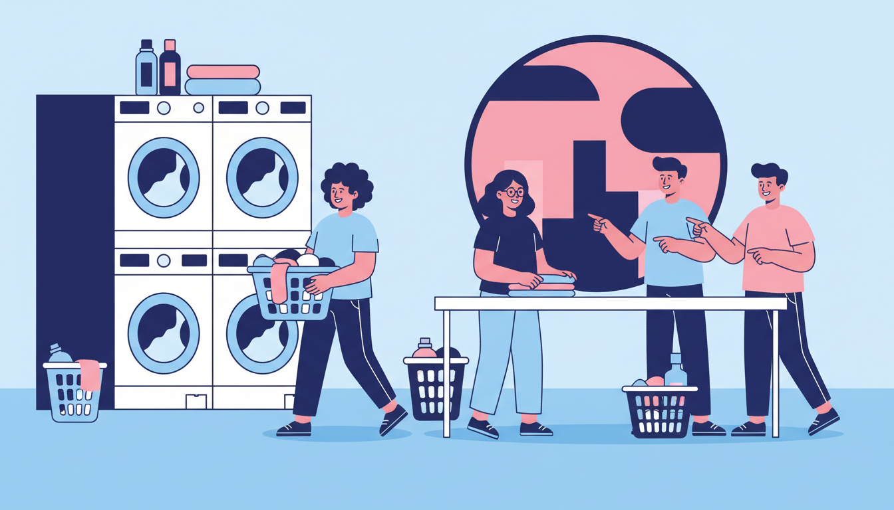

If you've ever lived in a Melbourne share house, you know the drill. There's one washing machine, four (or more) people who need it, and an unspoken tension that simmers every time someone leaves their wet clothes sitting in the drum for six hours. The share house laundry situation is one of those universal experiences that bonds housemates — or tears them apart. Here's how to make it work, and what to do when it doesn't.
The Core Problem
One washing machine. Multiple adults. Limited drying space. Everyone's busy. Nobody wants to deal with someone else's damp undies. It's a recipe for passive-aggressive sticky notes, group chat debates, and the occasional load of laundry that sits in the machine so long it starts to smell.
The truth is, most share house laundry conflicts come down to two things: timing and communication. Sort those out, and you'll avoid 90% of the drama. Here's how.
Tip 1: Create a Laundry Roster (And Actually Use It)
It might feel overly formal for a house full of 20-somethings, but a simple laundry roster prevents more arguments than any house meeting ever will. It doesn't need to be complicated — just assign each housemate a day or a time slot. Stick it on the fridge or pin it in the group chat.
For example, if there are four of you, each person gets one or two designated days per week. On your day, the machine is yours. No guilt, no negotiations, no waiting around for someone else to finish. If you skip your slot, that's on you — but the machine opens up for whoever needs it.
The roster works especially well in houses where people have different schedules. Night shift workers can grab an early morning slot, nine-to-fivers can take the evenings, and the one housemate who works from home gets the midweek slot everyone else can't use anyway.
Tip 2: Don't Leave Your Clothes in the Machine
This is the golden rule of share house laundry, and it gets broken constantly. When your wash cycle finishes, move your clothes out promptly. Set a timer on your phone if you need to. Leaving a finished load sitting in the drum blocks everyone else and — as a bonus — makes your clothes smell musty because they're sitting damp in a sealed machine.
If someone else has left their clothes in the machine and you need to use it, the etiquette is straightforward: move their clothes into a clean basket or onto the laundry bench. Don't dump them on the floor, don't put them in the dryer without asking, and definitely don't passive-aggressively pile them on their bed. Just move them neatly and send a polite message. We're all adults here. Mostly.
Tip 3: Buy Your Own Detergent (Or Split the Cost)
Shared detergent sounds great in theory. In practice, someone always uses too much, someone else buys the cheap stuff that irritates everyone's skin, and nobody can agree on whether fabric softener is essential or an environmental crime. The simplest solution? Everyone buys their own. Keep your bottle in your room if cupboard space is tight. Problem solved, debate over.
Alternatively, if your household genuinely gets along (lucky you), set up a shared kitty for laundry supplies and take turns buying. Just make sure you agree on the brand first. This is Melbourne — people have opinions about detergent.
Tip 4: Clean the Lint Filter and Wipe the Machine
Nobody wants to open the washing machine lid and find a mystery puddle, stray socks, or a lint filter that looks like it's growing a small animal. Be the housemate who leaves the machine in the state you'd want to find it. Clean the lint filter after each use, wipe down the rubber seal, and leave the door open between washes to let the drum air out. It takes 30 seconds and it stops the machine from developing that distinctive share house washing machine smell.
When the Laundromat Wins
Even with the best roster and the most considerate housemates, there are times when the share house machine just isn't going to cut it. Here's when a trip to the laundromat is the smarter move.
Bulky Items
Your doona, heavy blankets, couch cushion covers — these items need a much bigger drum than the average household machine provides. Cramming a queen-size doona into a 7-kilogram washer doesn't clean it properly and risks damaging the machine. A commercial 27KG washer handles these with room to spare.
Laundry Backlog
Coming back from a holiday? Had a busy few weeks and let it pile up? When you're staring down three or four loads' worth of laundry and the share house roster gives you one time slot, the maths doesn't work. At a laundromat, you can run multiple machines at once and knock out the whole lot in an hour.
The Machine Broke (Again)
Share house washing machines live hard lives. They're used constantly, rarely maintained, and owned by a landlord whose idea of a timely repair is "sometime in the next three weeks." When the machine breaks down, you need a backup plan that doesn't involve hand-washing in the bathtub. A laundromat is always there, always working, and nobody's left a note on it.
You Just Need Some Peace and Quiet
Sometimes the laundromat isn't about the laundry at all. It's about 45 minutes of time to yourself — headphones in, podcast on, no one asking if you've seen their favourite mug. There's a certain meditative quality to watching the drum spin while you catch up on your reading. Call it self-care with clean clothes as a bonus.
Your Laundromat Backup Plan
At Laundry Day, we've designed our laundromats for exactly this kind of situation. Walk in, load up, tap your card (zero fees), and you're done. Detergent is free with every wash, so you don't even need to remember to bring your bottle from home. Our giant 27KG washers handle everything from your weekly load to the doona you've been putting off for months.
We have three Melbourne locations that are easy to get to from most inner-city and western suburbs share houses: Brunswick East (220 Lygon St), St Albans (4/329 Main Road East), and Maribyrnong (103 Rosamond Rd). All open 7 days, 6 AM to 10 PM — early enough for the morning person, late enough for the night owl.
So next time the share house machine is occupied, broken, or surrounded by someone else's wet towels, don't stress. Grab your laundry bag and head to Laundry Day. No roster required.
Escape the Share House Laundry Queue
Multiple machines, giant 27KG washers, free detergent, and zero card fees. No roster required.
Find Your Nearest Location